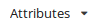
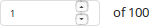
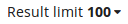

Table of Contents
- Introduction
- Tutorial
- Getting started
- A simple query
- Executing the query
- A query with two nodes
- Disjunctions, regular expressions and set enumerations
- Types of relations (links)
- Querying labeled references using the
memberselector - Subqueries (testing existence, non-existence and number of occurrences)
- Looking for small result trees?
- Functions
- Output filters
PML Tree Query (PML-TQ) is a query language and search engine targeted for querying multi-layer annotated treebanks stored in the PML data format. It can be used to query all kinds of treebanks: dependency, constituency, multi-layered, parallel treebanks, as well as other kinds of richly structured types of annotation.
The query language is declarative and offers both textual and graphical representation of queries (note: in the current version of the WEB-based interface, only the textual representation of queries is available). There are two implementations of the query engine, one based on a relational database (Oracle or PostgreSQL >= 8.4), the other based on Perl and the TrEd toolkit. Three user interfaces are available: a WEB-based interface for the database-based query engine displaying query results as SVG, a full-featured graphical user interface for both engines available as a plug-in to the tree editor TrEd, and a text-only command-line interface.
This tutorial focuses on the WEB-based interface. For a tutorial dedicated to the TrEd client, as well as for further information on the query language, please refer to the PML-TQ manual.
queries can span over all layers of annotation (including annotation dictionaries)
allows arbitrary logical constraints
supports output filters (generate custom text output, compute statistics, ...)
the WEB-based client works without installation, in a web browser
A PML-TQ query consists of a selective part that selects nodes from the treebank and an optional sequence of output filters that are used to extract data from the matching nodes, post-process the results, compute statistics, generate tabular output, etc.
The selective part of a PML-TQ query postulates requirements on one or more nodes from the treebank and their mutual relationships (e.g. on the topological configuration in the tree structure). It is formed by one or more node selectors, which form the outermost scope of the query. Inner scopes of the query are given by nested subqueries as described later.
A node selector represents a node in the treebank of a certain type (in the PML data model, the nodes in the treebank annotation can be typed; the query can also refer to several annotation layers with different types of nodes) and postulates constraints on its properties including relationships to nodes represented by other selectors.
Selectors may nest other selectors; a nested
selector belongs to the same scope as the containing selector The nested
selector may explicitly specify the relation of its matching node to the
node matched by the containing selector; the default relation is
child. The nesting of selectors can thus naturally
follow the topology of the matching tree.
Selectors can also be named and referred to from other node selectors; however, in many cases, the need for explicitly naming them can be eliminated by nesting.
A match of a query is a mapping which assigns to each outermost-scoped selector a node from a treebank (called a matching node) of the type specified by the selector, in such a way that all the matching nodes are mutually distinct and simultaneously satisfy the constraints postulated by their corresponding selectors (including constraints on their mutual relationships). The match can be represented as a tuple of the matching nodes ordered accordingly to some canonical ordering of the selectors from the outermost scope of the query. There can be zero, one, or more distinct matches of the query in the treebank (two matches are distinct if, as ordered tuples, they differ in at least one node).
Non-identity rule: Two distinct selectors in the same scope of the query always represent two distinct nodes in each match of the query or sub-query (unless explicitly specified othewise in the query).
Selectors can postulate the following types of constraints:
predicates
references to other selectors
subqueries
boolean combinations of the above
In the following descriptions, we refer to the selector postulating a constraint as as the current selector.
Predicate constraints assert equality,
inequality, or regular expression match between values computed from
terms. An atomic term is a constant (integer, float, or character string),
or an attribute of a node matched by the current selector or some other
selector in the current or outer scope of the query. A term is either an
atomic term or a term obtained from other terms using arithmetical
(+, *, -, div, mod) or string (concatenation
& ) operators, or functions.
A reference is a constraint on the relationship of a node matched by some named selector to the node matched by the current selector. The referred selector must either belong to the same scope as the current selector or to its outer scope.
A subquery is formed by a selector (called the leading selector of the subquery) nested in the current selector and augmented by restrictions on the number of occurrences, computed as the number of distinct nodes matched by the leading selector of the subquery relatively to a fixed match of the selectors in the current and outer scope (including the current selector). For example, to postulate a constraint that each node matched by the current selector must have at least two child nodes, we create a subquery in form of a nested selector in the child relation to the current selector and restrict the number of occurrences to two and more.
The leading selector can nest other selectors. Each subquery starts a new scope whose outer scope is the scope of the containing selector together with the containing selector's outer scope (if any). Unlike selectors from the outermost scope, selectors declared within a subquery do not represent any particular node in the resulting match. They can refer to selectors from the same scope, and also to selectors from the outer scope, but not vice versa (selectors from the outer scope cannot refer to the selectors in the subquery).
A subquery constraint is verified as follows: for each match of the selectors in the current and outer scope, all matches of the subquery are located (these may coincide with nodes matched by the selectors in the outer scope). The number of distinct nodes matched by the leading selector of the subquery are counted and this number is compared with the restrictions on number of occurrences. The constraint is satisfied if and only if these restrictions are met.
A constraint can also be a boolean combination of other constraints; a nested node selector occurring in a boolean combination with other nested node selectors or constraints is considered to be a subquery with at least one occurrence.
A PML-TQ query can be visualized as a graph consisting of one or more trees whose nodes are the selectors connected by edges according to the nesting of selectors and subqueries. In this sense we may sometimes refer to selectors as query nodes and to the query as query graph or query tree (a technical root can be added above all the trees so that a forest becomes a single tree). The edges can be labeled or colored to represent different relationships between nodes. References to named selectors can be represented by an additional layer of links (edges) in the graph that may go across the basic tree structure of the query tree.
The purpose of this tutorial is to show how to create and run queries from the PML-TQ WEB-based client, searching treebanks hosted at the Lindat/Clarin web pages.
As our examples, we use queries over the Prague Dependency Treebank 3.0; conceptually similar queries can be applied to most other treebanks, although the node types and attributes will be probably different.
The tutorial gradually passes from very simple to complex queries and demonstrates various common syntactic constructions of the PML-TQ language.
The PML-TQ provides a client interface in the form of a web application that can be accessed by any web browser capable of combining JavaScript, CSS, and SVG (Scalable Vector Graphics), such as Firefox, Google Chrome, Opera browser, and Safari.
Unlike the TrEd interface, this interface does not require any installation, but lacks some features such as graphical query builder and graphical representation of the query (the queries must be entered in the text form), and of course does not support querying local files.
To access the PML-TQ servers hosted at Lindat/Clarin servers, go to lindat.cz and in the top menu, click on . A starting PML-TQ web page will be displayed (see Figure 1, “The PML-TQ web-service at Lindat/Clarin web pages”).
Below, you can see two lists – a list of recently used treebanks and a list of featured treebanks. Clicking on any of the listed treebanks will connect you directly to the server for the given treebank.
A list of all available treebanks can be accessed by clicking on , as demonstrated in Figure 2, “The list of available treebanks at Lindat/Clarin web pages”.
Here, you can filter the treebanks according to their public availability (i.e. accessibility of the server without login), language and other tags. By clicking on a single treebank from the (filtered) list below, you will get connected to the search server for the respective treebank. For example, if you select the Prague Dependency Treebank 3.0 (PDT 3.0), you will get to the following web page (Figure 3, “The help page for the PDT 3.0 treebank”):
It is a very short introduction to the query language that should help you start searching in the treebank if you do not wish to read through this lengthy tutorial. To proceed to the page where you can actually enter a search query, click on .
The following web page will be displayed (Figure 4, “The start page for searching in the PDT 3.0 treebank”):
Now we may create our first simple query. We shall search for all
nodes of the type t-node (tectogrammatical nodes in
PDT 3.0) whose attribute functor equals to
PRED (Predicate). In the web client, the query can be created in two
ways:
Method 1: Click on in the toolbar; a list of available nodes for PDT 3.0 is displayed:
Chooset-node. The stringt-nodewill be copied to the text area below the toolbar.Properties of a node follow its type, enclosed in square brackets: type
[and choose a t-node attributefunctorfrom menu  in the toolbar. Next, select operator=from theComparisongroup in the menu in the toolbar, and type
menu in the toolbar, and type "PRED". Finish by closing the definition of the t-node by]. Figure 6, “A simple query searching for Predicates in PDT 3.0” shows how the query should look like (the spaces are optional).
Method 2: In the query text area, start typing
t-. The popup menu with possible node types will be offered:
Chooset-nodeand continue typing the query, i.e.[ fu. After you start typing the name of the attribute, another popup window with possible attributes is offered:
Choosefunctorand finish typing the rest of the query, i.e.="functor"].The resulting query should be the same as in Figure 6, “A simple query searching for Predicates in PDT 3.0” (again, the spaces are optional), i.e.:
t-node [ functor="PRED" ]
Note
Throughout the tutorial, you can use the button try the query placed below examples to go directly to the web client and try the example. Such permanent links to queries in the web client can be created by clicking on on the right side below the query text area.
To execute the query, press below the query text area. The query gets processed by the server and the result is displayed. Figure 6, “A simple query searching for Predicates in PDT 3.0” shows the first matching tree.
The corresponding sentence is displayed just above the tree. Try clicking on the individual words of the sentence and see the animation marking the corresponding nodes in the tree.
Buttons and can be used to navigate among the results, and buttons and to see context sentences/trees. To go directly to the N-th result, change the number of the current result () to a desired number (make sure that the focus is in the result number field) and – in the list of matching nodes – click on . The corresponding matching node in the given result is displayed (and highlighted in the same colour, in this case green).
Note
By default, the search engine returns up to 100 matches (in no particular order), which should be more than sufficient for viewing a few matching examples. This limit can be changed on the right side above the query text area ( ), but raising this limit may slow down the search. We shall later see how to compute the number of all matches, using output filters.
We shall now make the query more complex by adding another node to it. We shall ask for a t-node with functor "PRED" (Predicate) that has a child with functor "PAT" (Patient).
To add a node to an existing one in the query, you need to specify a type of relation of the new node to the existing one. The list of available relations can be accessed through in the toolbar (see Figure 10, “A part of the list of available standard relations between nodes in PML-TQ”).
The default value is child, so the following two queries
are equivalent:
t-node [ functor="PRED", t-node [ functor="PAT" ] ]
or
t-node [ functor="PRED", child t-node [ functor="PAT" ] ]
These forms of the query use nesting of node selectors. The query can also be expressed without nesting, using names, either as
t-node $a := [ functor="PRED", child $b ]; t-node $b := [ functor="PAT" ];
or
t-node $a := [ functor="PRED" ]; t-node $b := [ functor="PAT", parent $a ];
naming the two nodes
$a and $b and either indicating
that $a has a child $b or that $b
has a parent $a.
We now extend our query to cover t-nodes not only with
functor PAT (Patient) but also ADDR (Addressee).
This can be done in three different ways:
Using a disjunction:
t-node [ functor="PRED", t-node [ functor="PAT" or functor="ADDR" ] ]
Using a regular expression:
t-node [ functor="PRED", t-node [ functor ~ "^(PAT|ADDR)$" ] ]
Symbol ~ (tilde) denotes a binary relation between
two values that is true if and only if the value on the left interpreted
as string matches the value on the right interpreted as regular
expression.
Using a set enumeration:
t-node [ functor="PRED", t-node [ functor in { "PAT", "ADDR" } ] ]The relation in asserts that the value computed
from the expression on the left equals to a value of some of the
expressions listed in the set enumeration on the right.
The nodes in the query can be linked by several types of
relations. The built-in relations are the structural relations (child,
parent, ancestor, descendant, sibling, same-tree-as,
same-document-as), ordering relations (depth-first-precedes,
depth-first-follows, order-precedes, order-follows). The name of a
built-in relation can optionally be followed by a pair of colons
:: in order to distinguish it from PML reference
relations described below.
The PML data model allows connecting nodes (and other data
structures) by so called PML references. In PML-TQ one can use any PML
reference as a relation by using the attribute path of an attribute
containing the reference, optionally followed by
-> (in order to prevent a collision with a
similarly named built-in or implementation specific relations). For
example, in PDT 3.0, nodes on the t-layer are connected to nodes
on the a-layer using PML references in the attributes
a/lex.rf and a/aux.rf. The
following query uses the a/lex.rf PML reference as
a relation:
# t-layer dependency reversed on a-layer
a-node $A := [
child a-node $B := [ ]
];
t-node [
child t-node [
a/lex.rf $A
],
a/lex.rf $B
];
try the queryPML references are also used in PDT 3.0 to represent
grammatical coreference links (attribute
coref_gram.rf). For example, the following query
searches for a grammatical coreference where referring node precedes
the referred node. The query defines selectors for two
tectogrammatical nodes $referring and
$referred connected by a grammatical-coreference
link coref_gram.rf, such that the lexical
counterpart of $referred follows that of
$referring in the ordering of the a-layer (which
coincides with the ordering of the original sentence).
t-node $referring := [ a/lex.rf a-node $referring_lex := [], coref_gram.rf t-node $referred := [ a/lex.rf a-node $referred_lex := [ order-follows $referring_lex ], ] ]try the query
In the previous example, the two t-nodes were directly connected by
a grammatical-coreference link. If we want to look for nodes connected
by a chain of grammatical-coreference links, we can do it by using a
transitive closure of the relation coref_gram.rf,
which can be expressed in PML-TQ as
coref_gram.rf{1,}. The lower bound
1 means we are looking for chains of length at
least 1 and the absence of the upper bound means that we put no limits
on the length of the chain.
t-node $referring := [
a/lex.rf a-node $referring_lex := [],
coref_gram.rf{1,} t-node $referred := [
a/lex.rf a-node $referred_lex := [ order-follows $referring_lex ],
]
]try the queryNote that in the case of a cyclic chain of PML references, the chains maximum length is the number of distinct nodes in the chain plus one (i.e. the chain is allowed to start and end on the same node, but it is not allowed to continue another round along the cycle). For example, the following query searches for a cycle in the annotation of grammatical coreference in the PDT 3.0 tectogrammatical annotation (and does not find anything, as there are no such cycles in PDT 3.0):
t-node $t := [
coref_gram.rf{1,} $t
]try the queryFinally, any particular implementation or installation of the
PML-TQ query engine can extend the language by defining and
implementing additional specific relations. The relations behave
syntactically as the built-in relations and must use different names
than the built-in relations (their name can be followed by a pair of
colons :: in order to distinguish them from a PML
reference relation).
The current implementation defines two relations specific for
the PDT 3.0 annotation: echild and
eparent. These relations can be used both on the
tectogrammatical and analytical layer and represent the effective
dependency, rather than technical dependency represented by the
built-in relations child and
parent. Thus, they abstract from certain
constructions such as coordination and apposition as well as the
dominance of prepositions (afun="AuxP") and
connectives (afun="AuxC") on the analytical
layer.
Here are a few examples of queries using these relations:
# a semantic verb with ACT (Actor) and EFF (Effect) t-node [ gram/sempos="v", echild t-node [ functor="ACT" ], echild t-node [ functor="EFF" ], ]try the query
# a t-node with two effective parents (common modifier of coordinated nodes) t-node [ eparent t-node [ ], eparent t-node [ ], ]try the query
# a verb with no actant
t-node $a := [ gram/sempos="v",
! echild t-node [ functor in { "ACT","PAT","ADDR","ORIG","EFF" } ]
]try the query
# reversed effective dependency on a-layer and t-layer
# excluding numeric constructions
a-node $A := [
m/tag !~ "^C",
echild a-node $B := [
m/tag !~ "^C"
]
];
t-node [
a/lex.rf $B,
echild t-node [ a/lex.rf $A ]
];try the queryJust like PML reference relations, specific relations can be used in the transitive form by setting minimum and maximum bounds, for example:
# effective descendant
t-node [ echild{1,} t-node [ ] ]try the query# effective grand-grand child
t-node [ echild{2,2} t-node [ ] ]try the queryThe member selector is useful for querying some types of
complex-valued node attributes, e.g. lists of complex structures. In PDT 3.0,
there are three such attributes, representing discourse relations (attribute discourse),
textual coreference (coref_text) and bridging anaphora (bridging).
For example, attribute bridging is a list of structures, each consisting of two members:
a PML reference to the anaphor node (bridging/target_node.rf)
and the type of the relation (bridging/type).
So, each structure in the list represents one labeled semantic
relation. To be able to combine constraints on the target node
(anaphor) with the type of the relation that points to it, we must
use a feature of PML-TQ called member
selectors.
The following query searches for bridging relations of type PART_WHOLE.
t-node [
member bridging [
type = "PART_WHOLE",
target_node.rf t-node [ ]
]
]try the queryThe intermediate member selector matches one
element of the bridging list at a time and tests its
type. If the type matches, the nested node selector for the
target_node.rf PML-reference relation takes action.
Similarly, we can search for discourse relations of a given discourse type.
The following example searches for discourse relations of discourse
type opp (opposition). The query also specifies that
the target node is in the same tree as the start node, thus searching only for
intra-sentential discourse relations.
t-node $s:= [
member discourse [
discourse_type = "opp",
target_node.rf t-node [ same-tree-as $s ]
]
]try the querySometimes it is useful to test existence, non-existence or number of occurrences of a node related to our query. For example, to find all predicates without a subject on the analytical layer of PDT 3.0, we could use the following query
a-node [ afun="Pred", 0x echild a-node [ afun="Sb" ] ]try the query
The query finds an a-node with afun="Pred" that
has no effective children with afun="Sb". This is
expressed using a selector preceded by a restriction on number of
occurrences (0x - zero times), which is called a subquery.
Of course, we could constrain the number of occurrences to a non-zero value, too. For example, to find all predicates that govern one subject or one object, but not both, we could use the following query:
a-node [ afun="Pred", 1x echild a-node [ afun in {"Sb","Obj"} ] ]try the queryThe nodes matched by subqueries are not part of the result match (in our example, the match would consist of the predicate nodes only, the subjects or objects would not be included).
The number of occurrences of a subquery can be constrained not
only to a single number but to any finite union of
bounded or partially unbounded intervals of positive integers; e.g.
0|2..4|6+x restricts the number of occurrences to
zero, two to four, or six or more, eliminating one and five. While the
plus sign stands for or more, the minus sign means
or less, as in 4-x (occurring
four or less times).
Subqueries are also created using boolean operators, such as negation:
a-node [ afun="Pred", ! echild a-node [ afun="Sb" ] ]try the query
In this example, the selector ! echild a-node [ afun="Sb"
] is automatically turned into a (still negated) subquery with
one and more occurrences; the query becomes:
a-node [ afun="Pred", ! 1+x echild a-node [ afun="Sb" ] ]
A common use of subqueries is also constraining nodes on a
descending path from one node to another. Let us for example formulate a
query searching for a descending chain of tectogrammatical nodes with
the functor RSTR (restrictive or descriptive
abdominal modification). We want the chain to satisfy the following
conditions:
The corresponding query looks like this:
t-node $N:= [ # condition 1. gram/sempos ~ "^n", functor != "RSTR", # conditions 2. and 3. descendant{3,} t-node $R := [ functor = "RSTR", # condition 4. 0x t-node [ functor = "RSTR" ] ], # condition 5. 0x descendant t-node [ !functor = "RSTR", descendant $R ], ];try the query
Note how the condition 5. is expressed:
we say that there is no descendant of $N dominating $R whose
functor would not equal RSTR.
Thus, we have rewritten the original condition of the form ∀x C(x,N,R)
as ¬ ∃x ¬C(x,N,R).
Sometimes you want to find a good small example tree demonstrating some linguistic phenomenon. You want it to fit to a presentation slide or an article page. You can do so by putting a limit on the tree size.
Using a subquery this can be done as follows:
t-node [ 10-x same-tree-as t-node [], functor="DPHR", # the rest of your query ]try the query
This selects t-nodes with functor="DPHR" in
trees with at most 10 other t-nodes. Using functions (see below), this can be
written as
t-root [ descendants() <= 10, descendant t-node [ functor="DPHR" ] ]try the query
but note that in this case the t-root appears
as a node in the result set. To avoid it, we can write
t-node [ functor="DPHR", 1x ancestor t-root [ descendants() <= 10 ] ]try the query
For treebanks that do not have a special node type for the root node, we can write e.g.:
node [
functor="DPHR",
1x ancestor node [
depth() = 0, # the root
descendants() <= 10
]
]PML-TQ provides a set of built-in functions that can be used in expressions constraining nodes and also in output filters. The functions can be split into the following categories:
functions returning information about the tree structure
functions related to information about the document
string functions
numerical functions
group functions (applicable only in output filters (see below)
In the web client, lists of available functions can be accessed via in the toolbar, see Figure 11, “A part of the list of available functions in PML-TQ”.
For description of all individual functions, refer to
the PML-TQ manual.
Here, we only give a few examples demonstrating
the use of some of the functions from the first category on a few common
query constructions, usually also expressible by means of subqueries.
Whether it is more efficient to use functions than subqueries may depend
on implementation.
# a leaf node (using functions) t-node [ sons()=0 ]try the query
# a leaf node (using a subquery) t-node [ 0x child t-node [ ] ]try the query
# right-most child t-node [ rbrothers()=0 ]try the query
# left-most child t-node [ lbrothers()=0 ]try the query
# first leaf node in a subtree of $t (using functions)
t-node $t := [
descendant t-node [
sons()=0,
depth_first_order()-depth()=depth_first_order($t)-depth($t)
]
]try the query# first leaf node in a subtree of $t (using a subquery) t-node $t := [ descendant t-node $d := [ sons()=0 ], 0x descendant [ sons()=0, depth-first-precedes $d ], ]try the query
# last leaf node in a subtree of $t
t-node $t := [
descendant t-node [
sons()=0,
depth_first_order()-depth()=depth_first_order($t)+descendants($t)-1-depth($t)
]
]try the query# last leaf node in a subtree of $t (using a subquery) t-node $t := [ descendant t-node $d := [ sons()=0 ], 0x descendant [ depth-first-follows $d ], ]try the query
Output filters are used for extracting data from the nodes matched
by the query and generating tabular output. Filters must follow the
selective part of the query and start with >>.
Filters can be chained: the first filter extracts data from the matching
nodes and all subsequent filters operate on the output from the
immediately preceding filter. Details can be found in the PML-TQ manual,
sections PML-TQ Syntax Reference
and Group Functions.
One of the simplest filters uses the group function
count() to compute the total number of matches of the
query in the treebank:
# counting occurrences t-node [ functor="PRED" ] >> count()try the query
The group functions min(),
max(), and avg(), can be used to
compute maximum, minimum, and average values of data extracted from the
matching nodes. For example: to compute a maximum number of child nodes
of a t-node with the functor PRED, we can use the
following:
t-node $n := [ functor="PRED" ] >> max(sons($n))try the query
The following query computes maximum, minimum and average size of a tectogrammatical tree:
t-root $n := [ ] >> descendants($n) >> max(), min(), avg()try the query
The above query uses two filters: the first extracts the number of
descendants from each node matched by the selector
$n, the second computes maximum, minimum and average
value from the values returned by the first filter.
The following query shows a common grouping construction using the
'for' clause. It extracts the attribute functor from
the matched nodes and for each distinct value counts the number it
occurred:
t-node $n := [ ] >> for $n.functor give $1, count()try the query
Note that $1 in the give
clause refers to the first (and only) key used in the
for clause, i.e. to
$n.functor.
By appending a sort by clause to a filter, we
may reorder the rows it produces by some of its columns. In the
following query, the output of the filter is sorted using the second
output column (the count()) in descendant order as
the primary key and the first output column (the $1
in the give clause) in the default (ascending)
order:
t-node $n := [ ] >> for $n.functor give $1, count() sort by $2 desc, $1try the query
The for clause can be used to create groups not
only by attribute values, but also by some of the matching nodes. For
example, in order to find out how many grammatical-coreference links can
start in one tectogrammatical node, we may use the following
query:
t-node $referring := [ coref_gram.rf t-node $referred := [ ] ]; >> for $referring give count() >> max()try the query
The selective part of the query matches every pair of
tectogrammatical nodes that are linked by a grammatical-coreference
link. The first filter groups the resulting pairs of nodes by the first
of the nodes ($referring) and outputs the number of
pairs in each group; this is the number of grammatical-coreference links
starting in the node $referring. The second filter
simply computes the maximum of the values returned by the first
filter.
The for clause partitions all input rows into
groups before any further processing and the subsequent
give clause then produces one output row for each
group, letting all group functions, such as count(),
min(), max(), etc. operate on the
particular group.
PML-TQ further supports a syntax that allows different partitions
to be defined for different group function and also let the
give clause operate on all input rows. This is done
by following the function arguments by an over
clause. Here we show an example where we use one of the ranking group
functions (row_number()) to select just a few top
ranking rows from each group. Please refer to the PML-TQ manual, section
Group functions explained
for more examples.
In the following query we extract the syntactic label
(afun) and the part of speech (the first position of
the morphological tag) from every node on the analytical
(morphosyntactical) layer of PDT 3.0. Then we apply further filters to
output in order to obtain the three most frequent parts of speech for
each afun. If several parts of speech occur the same
number of times for a given afun, we sample those three that come first
alphabetically.
a-node $a:= [ ] >> $a.afun, substr($a.m/tag,0,1) # get afun and part of speech (POS) >> for $1,$2 give $1, $2, count() # count occurrences of POS for each afun >> $1, $2, row_number(over $1 sort by $3 desc, $2) # get the rank of each POS over the afun sort by $1, $3 >> filter $3 <= 3 >> $1, $2, $3try the query